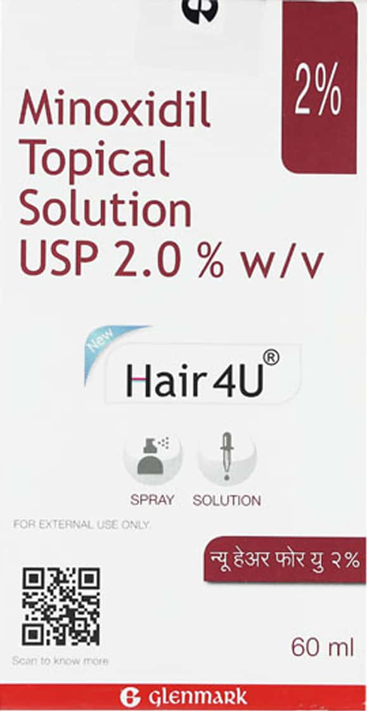

Minoxidil Topical Solution USP 2.0% w/v
Hair 4U
For External Use Only
60 ml
Glenmark
- Minoxidil Topical Solution USP 2.0% w/v is a hair growth treatment that is applied to the scalp.
- It is used to treat male and female pattern hair loss.
- Minoxidil Topical Solution USP 2.0% w/v is a clear, colorless liquid that is applied to the scalp twice a day.
- It is important to use the solution as directed by your doctor.
- Minoxidil Topical Solution USP 2.0% w/v may cause some side effects, such as itching, redness, and irritation of the scalp.
- If you experience any side effects, stop using the solution and talk to your doctor.
- Minoxidil Topical Solution USP 2.0% w/v is not for use by children.
- Keep the solution out of reach of children.
